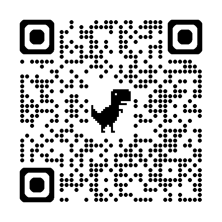

5 Argumentos de senso comum e senso crítico7
5.1 Objetivos de aprendizagem
Ao final deste encontro e com base na leitura indicada, espera-se que você seja capaz de:
Reconhecer a diferença entre argumentos baseados no senso comum e argumentos fundamentados no senso crítico.
Exercitar habilidades cognitivas necessárias à argumentação e ao pensamento científico.
Leitura indicada:
Leitura e escrita acadêmicas, capítulo do livro Leitura e escrita acadêmicas, de Nádia Castro e outros.
5.2 Introdução
Segundo Antônio Suárez Abreu, em seu livro “A arte de argumentar: gerenciando razão e emoção” (2012, p. 428):
Argumentar (…) não é tentar provar o tempo todo que temos razão, impondo nossa vontade.
Argumentar é, em primeiro lugar, convencer, ou seja, vencer junto com o outro, caminhando ao seu lado, utilizando, com ética, as técnicas argumentativas, para remover os obstáculos que impedem o consenso.”
Ainda segundo o autor (2012, p. 42),
Argumentar é também saber persuadir, preocupar-se em ver o outro por inteiro, ouvi-lo, entender suas necessidades, sensibilizar-se com seus sonhos e emoções.
Argumentar significa tanto convencer, como persuadir.
🧠 Convencer: levar o outro à aceitação de uma ideia por meio da razão, da lógica e de evidências verificáveis.
❤️ Persuadir: levar o outro à aceitação de uma ideia por meio da emoção, da empatia e da sensibilidade, respeitando sua autonomia.
Nádia Castro e outros autores (2019, p. 14) nos lembram que
Quando se pensa em argumentação, é preciso necessariamente remeter ao caráter dialógico — isto é, de diálogo — dos discursos.
Tudo aquilo que pensamos e fazemos é fruto dos discursos que nos constroem enquanto seres psicossociais.
Nesse caso, discurso significa um conjunto estruturado de ideias, valores, crenças, formas de linguagem e modos de ver o mundo que circulam socialmente e moldam nosso modo de pensar, agir e interpretar a realidade.
5.3 Aprendizagem prática
5.3.1 Questão 1
Você consegue identificar que discursos são descritos na tabela abaixo?
Preencha as lacunas da primeira coluna com os nomes dos discursos. Preencha também as lacunas da última coluna com dois ou três exemplos de textos típicos de cada um dos discursos identificados por você.
| Discurso | Características centrais | Objetivo principal | Exemplos típicos |
|---|---|---|---|
| ? | Usa linguagem formal e objetiva; é baseado em evidências empíricas e métodos sistemáticos; busca por generalização, explicação ou predição | Produzir conhecimento racional, verificável e universal | ? |
| ? | Usa linguagem técnica, normativa e prescritiva; é fortemente influenciado por códigos e leis; depende de estrutura argumentativa rígida | Regular comportamentos sociais com base na legislação | ? |
| ? | Usa linguagem persuasiva, apelativa e ideológica; enfatiza valores, identidades e crenças coletivas; visa gerar adesão ou mobilização | Influenciar decisões, conquistar apoio e justificar ações | ? |
| ? | Usa inguagem simbólica e valorativa; é baseado em doutrinas e crenças; apela à fé, à moral e à transcendência | Promover uma visão de mundo espiritual e normativa | ? |
| Discurso | Características centrais | Objetivo principal | Exemplos típicos |
|---|---|---|---|
| Científico | Usa linguagem formal e objetiva; é baseado em evidências empíricas e métodos sistemáticos; busca por generalização, explicação ou predição | Produzir conhecimento racional, verificável e universal | Artigos científicos, relatórios de pesquisa |
| Jurídico | Usa linguagem técnica, normativa e prescritiva; é fortemente influenciado por códigos e leis; depende de estrutura argumentativa rígida | Regular comportamentos sociais com base na legislação | Sentenças judiciais, leis, pareceres jurídicos |
| Político | Usa linguagem persuasiva, apelativa e ideológica; enfatiza valores, identidades e crenças coletivas; visa gerar adesão ou mobilização | Influenciar decisões, conquistar apoio e justificar ações | Discursos eleitorais, campanhas, debates parlamentares |
| Religioso | Usa inguagem simbólica e valorativa; é baseado em doutrinas e crenças; apela à fé, à moral e à transcendência | Promover uma visão de mundo espiritual e normativa | Sermões, textos sagrados, catequeses |
(…) a argumentação diz respeito a como melhor selecionar e organizar argumentos de diferentes naturezas para alcançar objetivos como demonstrar, persuadir e convencer.
O caráter dialógico da argumentação, segundo Castro e outros (2019, p. 14), depende do discurso em que essa argumentação deve se encaixar. Tudo depende do contexto, portanto.
(…) a argumentação se relaciona a públicos diversos (a quem se destina), a objetos claros (o que está em questão) e a circunstâncias específicas (em que momento e em que espaço se dá e de que modo se realiza).
É justamente o contexto que define o discurso do senso comum, que
usa linguagem informal, coloquial e empírica;
é baseado na experiência cotidiana e em tradições;
tem pouca ou nenhuma verificação sistemática.
O objetivo do senso comum, portanto, é explicar e, às vezes, regular o cotidiano com base em crenças compartilhadas.
Castro e outros (2019, p. 14), parafraseando Antonio Suárez Abreu, lembram que
(…) o senso comum é oriundo de variados discursos que formam o que se chama de “opinião pública”.
Ela seria constituída (…) por diversos discursos articulados que permeiam toda a sociedade, independentemente de classe social.
São exemplos de senso comum ditados populares, conselhos, “sabedorias” cotidianas.
De acordo com Savioli e Fiorin (apud Castro et al., 2019, p.14)
(…) os argumentos de senso comum normalmente são preconceituosos, pois não são baseados em fatos e comprovações, mas em afirmações usualmente generalizantes.
5.3.2 Questão 2
Explique como cada ditado popular abaixo reproduz o discurso do senso comum.
Aqui se faz, aqui se paga.
Deus ajuda a quem cedo madruga.
Cada macaco no seu galho.
Roupa suja se lava em casa.
Mais vale um pássaro na mão do que dois voando.
- Aqui se faz, aqui se paga.
➤ Este ditado pressupõe uma espécie de justiça imediata ou natural, segundo a qual toda ação negativa será punida com uma consequência proporcional.
➤ É uma forma de senso comum porque simplifica a noção de justiça, ignorando as complexidades éticas, sociais e jurídicas envolvidas em cada situação.
- Deus ajuda a quem cedo madruga.
➤ Atribui o sucesso pessoal ao esforço individual (acordar cedo), além de invocar uma recompensa divina.
➤ Reproduz o senso comum ao naturalizar a ideia de meritocracia, sem considerar fatores estruturais (como classe social, acesso à educação, saúde etc.).
- Cada macaco no seu galho.
➤ Defende que cada pessoa deve permanecer no seu lugar ou função, evitando “se meter” em outras áreas.
➤ Sustenta um discurso de conservação da ordem social, reforçando hierarquias e delimitando papéis de forma rígida e acrítica.
- Roupa suja se lava em casa.
➤ Defende que conflitos familiares ou problemas íntimos devem ser resolvidos em privado, sem exposição pública.
➤ Embora possa proteger a privacidade, favorece o silenciamento de abusos e injustiças, sendo um exemplo clássico de senso comum que reprime o debate público sobre questões sensíveis.
- Mais vale um pássaro na mão do que dois voando.
➤ Sugere que é melhor manter algo garantido do que correr riscos em busca de algo maior.
➤ Expressa um valor conservador, que inibe a ousadia e a inovação, e parte de uma lógica pragmática e simplificadora, típica do senso comum.
O senso comum baseia-se na experiência cotidiana, transmitida culturalmente, muitas vezes sem verificação crítica.
Castro e outros (2019, p. 15) afirmam que
(…) o senso comum consiste no conhecimento vulgar, nas opiniões diversas.
5.3.3 Questão 3
Analise com atenção a imagem abaixo, extraída de um contexto cotidiano. Identifique no texto da imagem as marcas do discurso do senso comum, respondendo às perguntas abaixo:
O enunciado generaliza alguma ideia?
O enunciado se baseia em evidências ou em crenças e emoções?
O enunciado reforça algum valor ou norma social amplamente aceita?
1. O enunciado generaliza alguma ideia?
Sim. A frase generaliza a figura materna, atribuindo a todas as mães um papel idealizado como origem da vida e fonte inesgotável de amor. Desconsidera, portanto, a diversidade de experiências familiares e afetivas, incluindo mães ausentes, negligentes ou relações familiares conflituosas.
2. O enunciado se baseia em evidências ou em crenças e emoções?
Baseia-se essencialmente em crenças e emoções. Não há comprovação empírica ou referência a dados que sustentem a ideia de que o amor de mãe seja eterno ou universal. A força da frase reside em seu apelo afetivo, tocando valores subjetivos e culturais enraizados.
3. O enunciado reforça algum valor ou norma social amplamente aceita?
Sim. A frase reforça a valorização idealizada da maternidade, um pilar do senso comum em muitas culturas. Sustenta a noção de que mães devem ser incondicionalmente amorosas, cuidadoras e abnegadas, consolidando uma norma social tradicional de gênero.
O senso crítico é o oposto do senso comum, já que envolve análise, comparação, verificação de evidências e compromisso com a racionalidade e o método.
O ponto de vista científico se constrói em torno do senso crítico, do pensamento científico.
5.3.4 Questão 4
Vamos estimular nossas habilidades cognitivas?
Pensar cientificamente e desenvolver o senso crítico não depende apenas de acesso a informações, mas sobretudo da capacidade de organizar o pensamento, identificar padrões, levantar hipóteses, interpretar dados e tomar decisões fundamentadas.
Essas habilidades — que envolvem atenção, memória, análise, síntese e inferência — são essenciais tanto para resolver problemas do cotidiano quanto para compreender e produzir argumentos bem estruturados.
Para exercitá-las, proponho um desafio linguístico que exigirá de você concentração, raciocínio lógico e uma boa dose de curiosidade. Em trios, resolvam a questão abaixo:

Nesta árvore, os nomes dos personagens híbridos são formados a partir de um padrão geral, com exceção de apenas dois. Se os nomes de todos os Pokémon fossem formados seguindo o padrão geral, qual não poderia ser um nome possível para o último Pokémon da árvore (o mais de baixo)?
- krabgon
- elekgon
- spinpy
- spinky
- spinorb
Resposta: (d)
Podemos notar que os nomes dos híbridos são formados pela combinação dos nomes dos dois Pokémon que os originaram. Por exemplo, na primeira linha temos:
• shugon: formado por shu- de shuppet e -gon de bagon.
• spinpip: formado por spin- de spinarak e -pip de hoppip.
• kraborb: formado por krab- de krabby e -orb de voltorb.
• elekpy: formado por elek- de elekid e -py de phanpy.A princípio, podemos pensar que o nome é sempre formado pela primeira parte de um Pokémon com a última parte de outro. No entanto, isso não se aplica a kraborb (a última parte de voltorb deveria ser -torb, e não -orb). Portanto, a regra é mais simples: combinar o início de um nome com o final de outro.
Na segunda linha, temos:
• spingon: formado por spin- de spinpip e -gon de shugon.
• kreky: formado por kr- de kraborb e -ky de elekpy.No caso de spingon, as partes dos nomes são as mesmas usadas anteriormente. Como spinpip é a junção de spin- com -pip, spingon usa spin- de spinarak, mantendo o padrão. Porém, kreky quebra o padrão, pois não usou o final completo de elekpy (faltou o ‘p’) e nem a parte inicial correta de kraborb (deveria ser krab-). Assim, kreky é o primeiro nome fora do padrão.
Depois temos:
• krinky: formado por kr- de kreky e -gon de spingon.Esse nome também foge ao padrão, pois mistura as partes do meio (-in-) de um nome com o início e o fim de outro. Portanto, krinky é o segundo Pokémon fora do padrão.
Agora que identificamos os dois nomes fora do padrão, podemos descobrir como seriam se seguissem a regra. A fusão de kraborb e elekpy deveria usar a parte inicial de um com a parte final do outro, respeitando as partes originais. Então, podemos ter:
• kraborb + elekpy = krabpy ou
• kraborb + elekpy = elekorb.Por fim, o nome do último Pokémon será a fusão de spingon com krabpy ou elekorb, utilizando o mesmo princípio de combinar partes iniciais e finais. As possíveis combinações são:
• spingon + krabpy = spinpy ou krabgon;
• spingon + elekorb = spinorb ou elekgon.Esses quatro nomes aparecem nas alternativas. O único que não seria possível é spinky, pois ele depende de kreky, que já está fora do padrão.
Um ponto interessante é que, ao seguir esse padrão de combinações, as informações sobre os Pokémon originais podem se perder. Por exemplo, o nome krabgon poderia parecer uma fusão de krabby e bagon, mas na verdade é o resultado de várias fusões anteriores.
Por fim, o nome do problema, Poképu, é a junção de Pokémon e Khipu.
